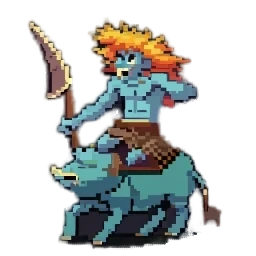
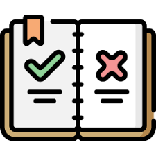

Axes and Trolls is an exciting and immersive strategy board game where players engage in epic battles to conquer the kingdom. Strategize your moves, outsmart your opponents, and dominate the ever-changing and unique map.
Choose which units to buy and destroy your opponents with. Each unit has its own unique abilities and stats that can help the players in their quest to dominate the map.
Build buildings to grow your troll kingdom. Different buildings provide different resources in the in-game economy and expands your empire.
Press the icon and download the rulebook for Axes and Trolls to learn how to play the game. Download
Note: Only available on windows
Axes and Trolls was created by:
For more information on how to contribute to Axes and Trolls, go to the Github repository. Github Link